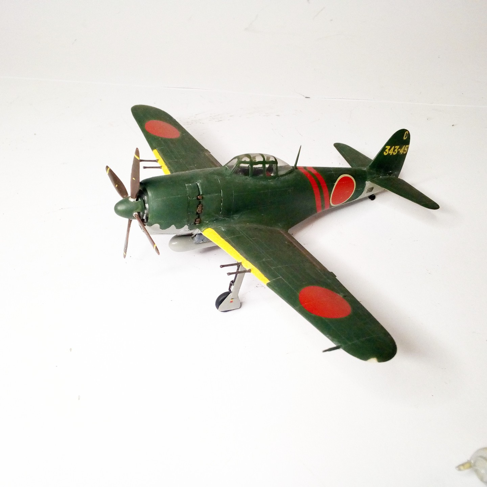

Aerei · scale model archive
Kawanishi N1K2-J Shiden-kai (George)
Kawanishi N1K2-J Shiden-kai (George) — Kit: Hasegawa, Scale: 1/72. 343 Naval Kokutai (wing) 701st Fighter Hikotai (SQ) Flt Leutnant Oshibuki Kanoya AB…

Photo gallery
English description
343 Naval Kokutai (wing) 701st Fighter Hikotai (SQ) Flt Leutnant Oshibuki Kanoya AB 1945
#1/72 #Hasegawa
Descrizione italiana
343 Naval Kokutai (ala) 701st Figther Hikotai (SQ) Flt Leutnant Oshibuki Kanoya AB 1945.